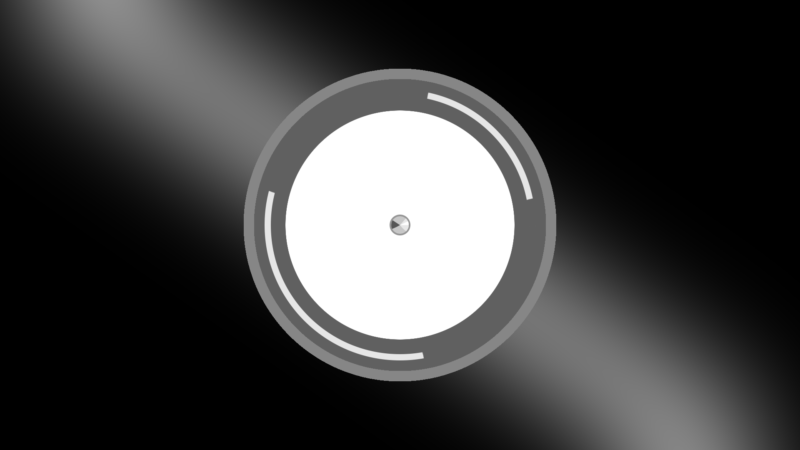
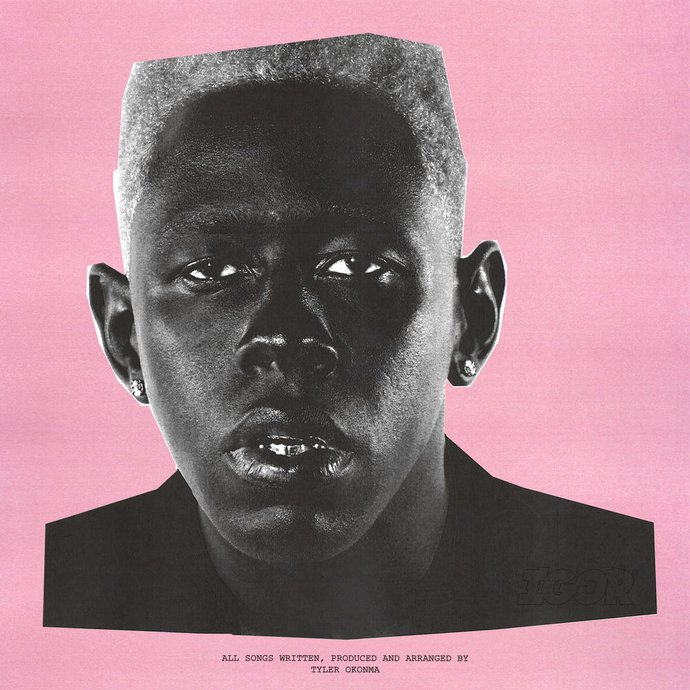
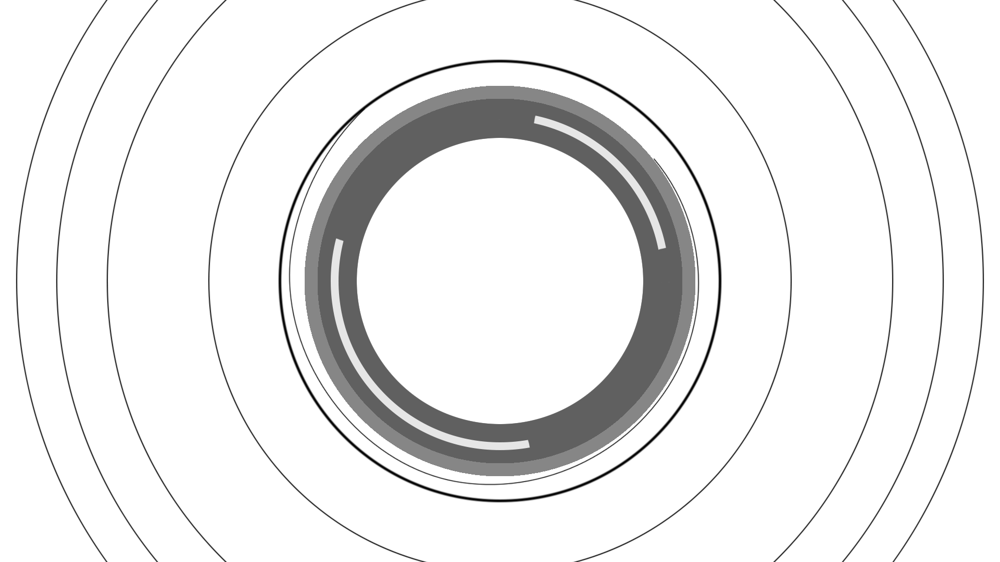

“EARFQUAKE” - это совместная работа Тайлера, создателя и Плейбоя Карти. В песне Тайлер поет о любовнике, от которого он зависит, с которым, как он знает, он обращался не лучшим образом, но в котором нуждается. Это сделано на красивых, жизнерадостных аккордах фортепиано и тяжелых, искаженных барабанах, смешивая стили из его последних двух альбомов, Cherry Bomb и Flower Boy.


